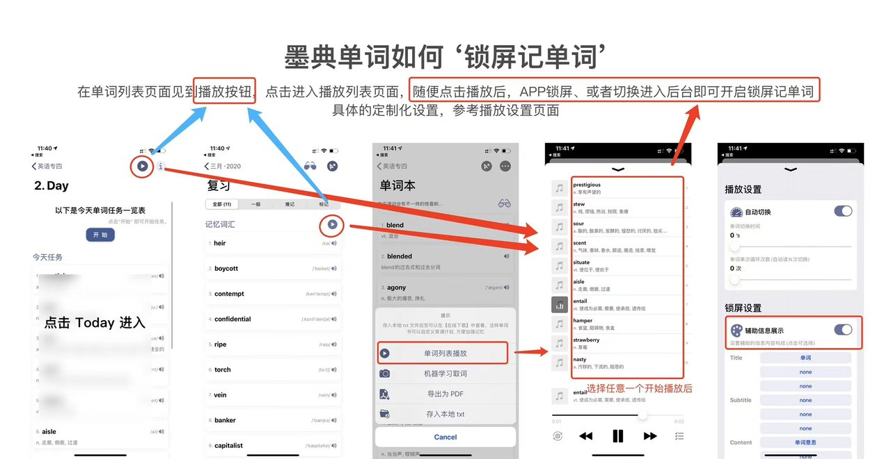

一句话回答：在任意单词列表页面点击播放按钮进入播放列表， 随便点一个单词开始播放；此时把 App 切到后台或直接锁屏， 单词就会以播放器的形式出现在锁屏界面，跟着设定的节奏自动往下走。 锁屏上显示哪些内容（单词、释义、音标）可以在播放设置里自定义。
它解决什么问题
背单词最难的不是坐下来那半小时，而是那些手上腾不出注意力、但耳朵和余光空着的时间—— 走路、等车、排队、做家务、跑步。这些时段没法盯着屏幕做选择题，但完全可以被动过一遍单词。
锁屏背单词把单词列表变成一个「播放列表」，交给系统的媒体播放框架接管。 好处是：不用解锁、不用把 App 保持在前台， 锁屏界面、控制中心、耳机线控都能直接控制上一个 / 下一个。
操作步骤
- 找到播放按钮。 单词列表类页面都有播放入口。三个常见的地方：当天任务列表（点击 Today 进入）、 复习页面的单词列表、以及词库的「单词本」。按钮是一个圆形的 ▶ 图标。
- 进入播放列表。 点击播放按钮后进入播放列表页面，这里会把当前列表里的单词排成一列。 也可以从单词本右上角的「…」菜单里选择「单词列表播放」进入。
- 随便点一个单词开始播放。 点哪个都行，它会从那个词开始往下走。
- 锁屏或切到后台。 这一步是关键——播放开始后，按电源键锁屏，或者划回桌面，锁屏记单词就生效了。 单词会出现在锁屏的播放器区域，随播放进度自动切换。
- 按需调整播放设置。 播放页面左下角的齿轮图标进入设置，可以调节切换节奏与锁屏显示内容（见下）。

播放设置：控制节奏
| 设置项 | 作用 | 建议 |
|---|---|---|
| 自动切换 | 总开关。关掉就变成手动模式，需要自己点下一个 | 被动过词时开启；主动跟读时可以关掉 |
| 单词切换时间 | 每个词停留多少秒后自动跳到下一个 | 只听发音 2–3 秒；想跟着回想释义留 4–6 秒 |
| 单词单次循环次数 | 同一个词自动读几遍再切换 | 生词设 2–3 遍；复习老词 1 遍即可 |
锁屏设置：控制显示什么
打开「辅助信息展示」后，锁屏播放器的三行文字可以分别指定内容。 系统播放器的三行分别是 Title（主标题）、Subtitle（副标题）、 Content（内容），每一行都能点击切换成「单词」「单词意思」或「none」（留空）。
三种值得一试的搭配：
- 回想模式（推荐）：Title = 单词，Subtitle = none，Content = none。 锁屏上只有英文，逼自己先想释义——这就是主动回忆， 比直接看到答案有效得多。
- 速览模式：Title = 单词，Content = 单词意思。 适合睡前或极度疲劳时过一遍，属于低强度的熟悉度维持。
- 纯听模式：三行全部 none，只听发音。 适合跑步、通勤时练听辨，配合听写测试效果更好。
一个诚实的提醒
锁屏背单词是辅助手段，不是替代手段。它提供的是「重复曝光」， 而真正巩固记忆的是主动回忆与检测。 把它当作正课之外的加餐——用它维持熟悉度、填满碎片时间， 但每天的复习任务还是要老老实实做完。
常见问题
播放会一直占用后台吗？会不会很耗电？
它以音频播放的形式在后台运行，耗电与听播客、听音乐属于同一量级—— 屏幕熄灭时主要开销是音频解码，比亮屏看单词省电得多。 不用时在控制中心暂停即可完全停止。
可以用耳机控制吗？
可以。既然走的是系统媒体播放框架，耳机线控、AirPods 的捏合手势、 车机与控制中心的上一首 / 下一首，都能直接切换单词。
没有网络能用吗？
可以，前提是词库已经下载到本地。锁屏播放读取的是本地数据， 和其他核心功能一样不依赖网络。
播放的是哪些词？
你进入播放列表时所在的那个列表——当天任务、复习列表或整本单词本。 想只过生词，就从生词本进入；想过当天任务，就从 Today 进入。